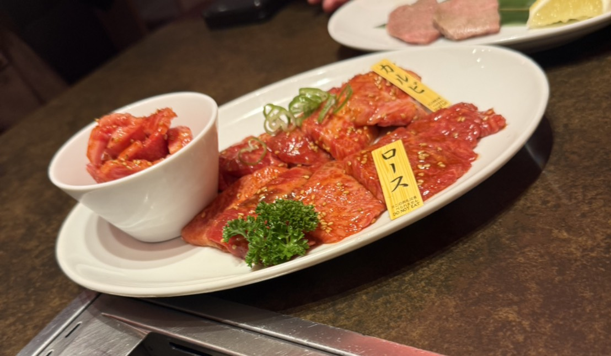
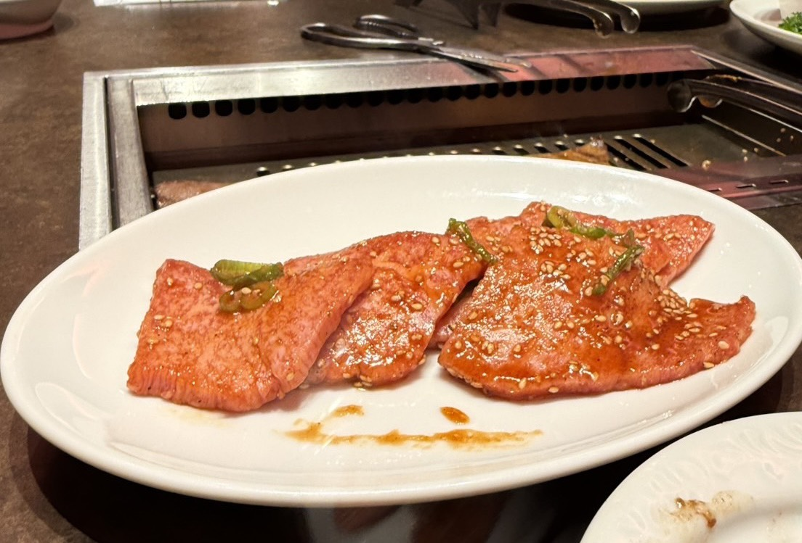

肉を見極める
明治32年創業の精肉店として 長年培ってきた肉を見る目を生かし、 素材の美味しさを大切にしています。

01
ABOUT YONAI
明治から続く、
肉へのこだわり。
焼肉レストラン米内は、 明治32年創業の精肉店から続く、 肉の専門店です。
精肉店として培ってきた肉を見る目を生かし、 前沢牛ステーキや焼肉、 盛岡冷麺などを通して、 肉の美味しさを届けています。
米内のこだわりを見る →
02
COMMITMENT
明治32年創業の精肉店として 長年培ってきた肉を見る目を生かし、 素材の美味しさを大切にしています。
焼肉を中心に、 肉の美味しさをしっかり味わえる 米内ならではの料理を提供しています。
焼肉と一緒に楽しみたい 盛岡冷麺など、 盛岡ならではの味も大切にしています。
03
HISTORY
1899
明治32年、肉の商いから始まった米内の歩み。
時代が変わっても、肉へのこだわりは続いています。
明治32年創業。 肉を扱う店として、 米内の歩みが始まりました。
焼肉レストランを 現在の盛岡・紺屋町へ移転。 新しい場所で米内の味を届けています。
精肉店から受け継いだ肉へのこだわりを大切に、 焼肉や盛岡冷麺を提供しています。
05
FIND YOUR MEAT
FIND YOUR MEAT
3つの質問に答えるだけで、
あなたにおすすめの肉をご紹介します。
QUESTION 01 / 03
QUESTION 02 / 03
QUESTION 03 / 03
YOUR RESULT
06
INFORMATION